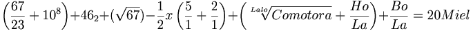
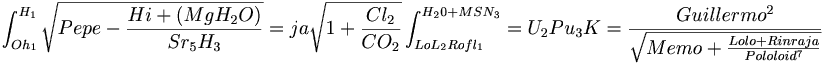

De: La Frikipedia, la enciclopedia extremadamente seria.
De: La Frikipedia, la enciclopedia extremadamente seria. De: La Frikipedia, la enciclopedia extremadamente seria.
Hace muchos años, un ser llamado IP anónima, estaba creando el mundo, cuando IP anónima decidió, en su último día de descanso, decidió crear 7 razas que posiblemente dominarían el mundo. Las criaturas eran las siguientes:
Esas 5 razas de creaturas, tenían el poder para dominar el universo, pero habrían que luchar entre ellas.
En el siglo -MXXXVII antes del princpio de la Tierra como la conocimos hace millones de años, los Plantae se establecieron en una colonia numerosa cerca de los Fungi y los Animalia. Durante algunas decenas de años, convivieron en paz, pero como pasa en el AoE cuando juegan muchos en un mapa chiquito, no cabían. Los Plantae, los Fungi y los Animalia intentaron desplazarse hacia el lado contrario, pero los Animalia tenian como obstáculo Un lago enorme, llamado Gorgolonia de algunos miles de kilómetros; los Fungi tenían como obstáculo unas montañas áridas de OcziBinaC y los Plantae tenían como obstaculo el Lago de Gorgolonia, las montañas de OcziBinaC, y de los otros lado los Fungi y los Animalia. Los Fungi y los Animalia se dieron cuenta de que los Plantae los obstaculizaban. Y entonces las amistades se rompieron
Unos meses antes de que se pelearan, los Fungi habían influenciado mucho a los Plantae. Les habían dejado de comerciar drogas (osease, hongos) y por lo tanto no podían 
Ni tampoco podían:
 Entonces, como los Plantae no tenían para drogarse, decidieron comenzar las hostilidades con los Fungi. Pero en parte fue bueno, así no había Plantaes drogados.
Una de las principales actividades económicas de los Plantae era el comercio de especies exóticas. Ellos, compraban animales a los Animalia, y los vendían a los Monera y a los Protistas, con los que todavía tenían buenas relaciones. Cuando los Animalia rompieron las relaciones con los Plantae, su economía se vió seriamente afectada. No tenían para comerciar alimentos con los Monera y los Protistas, y por lo tanto, menos dolares para vivir y para el pr0n.
Llevaban varios días preparándose, cada uno por separado. Los pueblos de Fungi y Animalia estaban listos para destruir a los Plantae. Con los ejércitos formados (Primero, infantería, luego, una parte de la cabllería, atrás, 3/4 partes de los arietes, mas atrás, el resto de la caballería con unas catapultas y los demás arietes, y unos soldados extra de refuerzos), a las puertas de PlantaeLand (puertas porque eran unas montañas, barreras naturales). Saliendo a las 2 de la madrugada del 34 de Marciembre, los Animalia estaban listos. Los Plantae tenían guardias en las montañas, los cuales tenían aceite hiriviendo (para las batatas hervidas, pero igual sirve) y se la hecharon encima a la 3er fila de los Animalia, y se asustaron, y echaron a correr, llegando mas rapido pero mas cansados a la capital de PlantaeLand. Por el aire llegaron los Fungi. A las 5AM de la madrugada, 70,000 Fungis a pie, 20,000 Fungis a caballo, 10,000 cañones Fungis, 1,000 arietes Fungis y 35,000 arqueros Fungis cayeron del cielo. A las 5:45 AM de la madrugada, ya estaban listos, y los cañones disparando. Los Fungis a pie iban a atacar por la parte del Lago, y los iban a acompañar 3,000 arqueros y 500 Fungis a caballo. Los 32,000 arqueros, 19,500 Jinetes Fungis, 10,000 cañones y los arietes, iban de pie hacia el centro urbando de los Plantae. Pero los cañonazos los habían advertido, y corrían a su encuentro, 50,000 Plantaes a pie, 30,000 Plantaes a caballo, 5,000 Plantaes arqueros, 5,000 Plantaes Arqueros a Caballo, y 300 cañones Plantae. Lo malo de eso, fue de que la infantería Fungi destruyó casi toda la capital, y los Animalia atacaron por detrás. De los animalia eran 50,000 animalios a pie, 30,000 a caballo, 5,000 catapultas, 3,000 arietes y los 750 de refuerzo.
Todos los Plantaes, Los Fungi y Los Animalios se mataron entre ellos, fue una masacre. Se identificaban porque los Plantae tenían color verde, los Animalios color azul cesped y los Fungi amarillo piscina. Los cañonazos de los Fungi fueron los mayores responsables de la masacre, los que mataron casi el 40% de los Plantae y los Animalios. A pesar de que los Animalios y los Fungi estuvieran aliados, se mataron entre ellos, porque pensaban que eran Plantaes. Los Plantaes sabían que eran atacados, y por eso no se confundieron. Mataron a todo lo azul cesped y amarillo piscina que veían. Entre los héroes destacaron Plantae, el cuál tenía a su mandato 2,000 Plantaes a pie y 1,000 Plantaes a Caballo. El fue directo hacia los cañones; en su camino, con sus Plantaes, mató a miles de Fungis y Animalios. Viendo que tenían obstáculos, mandó a 500 Plantaes a pie y a 200 Plantaes a caballo por un lado, para rodearlos; de esos Plantaes no sobrevivió ninguno, pero le abrieron brecha a Plantae y a 500 Plantaes a pie y 700 Plantaes a caballo. El resto no sobrevivió. Con esos 1,200 Plantaes sobrevivientes, avanzaron lo mas rápido posible hacia los cañones, intentando salvar a todos los Plantaes inocentes del pueblo. Para su sorpresa, unos helicopteros de guerra de los Monera estaban ahi para ayudarlos, los cuales les dispararon a los Fungi, antes de que los cañones los destruyeran. Los helicopteros de los Monera cayeron a la retaguardia de los Plantae, cerrando el camino a los demás Fungi. Los cañones Fungi tenían una guardia de 3,000 Fungis a pie y 200 Fungis Arqueros. Los Plantae pelearon con fiereza; cuando quedaba un reducido grupo de 300 Plantae a pie y 200 a caballo, un milagro los salvó.... En las llanuras de PlantaeLand, los Fungi y los Animalia se habían reconocido, cuando de repente, rodeando a los 10,000 Plantaes restantes, vieron una gran luz dorada, cegandolos por un momento, para muchos Animalia y para otros Fungi fue lo último que vieron.
Unos segundos después, Pololoid había aparecido ayudando a los Plantae. Ya estaba alto el sol, cuando Pololoid había lanzado una granada santa, destruyendo una parte de los Animalia y los Fungi. Pololoid había aparecido unos momentos antes, y había destruido los cañones, salvando al coronel Plantae y a su pequeña tropa. Los Plantae, de reducido momento, aprovecharon el factor sorpresa, pero no se esperaban ver las míticas falanges de Pololoid que habían defendido la maravilla de Travián. Estas, peleaban con fiereza contra los Fungi, junto con su general Pololoid. Los Plantae se lanzaron contra los Animalia, de ahí que estos los odien tanto. De las decenas de miles que eran los Plantae no quedaban ni 20,000 entre los dos bandos. Pololoid, junto con sus Falanges, mataron a todos los Fungi, y entonces terminaron el trabajo de los Plantae, exterminar a ejército de los Animalia. Pero como los Plantae tienen buen temperamento, descidieron dejarlos en paz, y alejarse.
Después de la batalla de las llanuras de PlantaeLand, Pololoid fue detrás de los Fungi que estaban causando destrozos en la capital, y los mató a todos. Como Pololoid era muy sabio, el sabía que los Monera y los Protistas iban a aprovechar y esclavizar a los Plantae, y dijo que si lo deseaban, el podría esclavizarlos para ellos; pero los Plantae, siempre de buen humor, dijeron que no, porque habían tenido buenas relaciones con ellos. Entonces, Pololoid les dijo que tendrían que mudarse, y les dijo que el sabía donde, una porción de territorio inexplorado, rico en materias primas, o sea, oro, plata, tierras fértiles, etc; y esa parte de territorio se estaba separando del continente, por lo que deberían irse ahí lo mas rapido posible, y abandonar todo, llevarse lo mas importante, que tendrían que dejar los Pololoid, siendo sabio, sabía que los Protistas estaban en camino, así que dijo a los Plantaes que se pusieran en moviento, ensillaran en caballos, mulas y canis, y llegaran ahí lo mas rapido posible, y como palabras de despedida, les dijo:

|
"Escuchad mi palabra un mandamiento nuevo os doy: |

|
| Sabias palabras de Pololoid |
Fue lo último que le escucharon decir a Pololoid en la Tierra hasta nuestros días.
Los Plantae, ya en marcha, llegaron a lo que despúes sería La Isla Perdida de Plantae. Ellos, se establecieron, esperando a que la isla se separara del continente. Pasaron los días, y por fin, un sujeto llamado Plantae, que estaba haciendo guardia, por si acaso venían los Monera o los Protistas, cuando de repente, sintió una ligera sacudida en su torre de madera, y vió, con asombro, que se separaban del continente. No se sabe si esa velocidad la agarró gracias al impulso de una patada de Van Damme en otra dimensión, y si fue un capricho del creador; IP anónima. Plantae, vió como primero, un pequeño arroyuelo los separaba del continente, y luego, se ensanchaba hasta formar un río de algunos metros de ancho. Y pues, al fin, solo por agua y por aire podrían alcanzarlos. Tocó la campana que tenían para cuando eso sucediera. Los Plantae, habían establecido una base económica prontamente, para poder sobrevivir. Una parte la tenían de granjas, para la próxima temporada, pero, previsoramente, habían llevado latas de Atún, y cosas así, por lo que no morirían. Tenía también minas de metales raros, comunes y comestibles, por lo que en caso de terremto podrían sobrevivir, y, como los Animalia y los Fungi los habían reducido en numero, había comida para todos.
Los Plantae vivieron en paz durante varios miles de años, sin evolución alguna, o por lo menos, no notable. Tenían ya una grand ciudad, y unos pueblitos ya. Un gran ejército, armas con pólvora, etc. Tenían templos en honor a sus dos deidades: Pololoid y IP anónima
Su Pololoid, por haberlos salvado; y le rezaban a IP anónima por haberlos creado. Ellos, todavía con el impulso de la patada de Van Damme, habían aprovechado, y habían construido molinos de viento y molinos de hagua, y no necesitaban casi nada mas para la electricidad. Pero, poco a el impulso se fue agotando, y tuvieron que buscar nuevas fuentes de energía. Y, por capricho del destino, se estaban dirigiendo hacía un Bujero Negro. Lo empezaron a notar, cuando en la parte norte de la isla, empezó a desaparecer el ganado, y las personas. Mandaron a un equipo de 300 Plantaes a investigar, y solo regreso uno. Ese Plantae, llamado Plantae, dijo de que había un bujero negro tragandose la isla, que vió como sus compañeros se iban haciendo como espaghettis y finalmente desparecían tragados por el Bujero Negro, y de que el estuvo a punto de ser tragado, pero de que sobrevivió. Así, llego a avisar, pero era demasiado tarde, porque el Bujero Negro estaba creciendo en volumen, tamaño, área, perimetro y población.
Casi todos los Plantaes eran tragados por el Bujero Negro, y de nada servía rezarle a IP anónima, porque estaba ocupado haciéndose monos. Dirigidos por Plantae, el máximo exponente de los Plantaes, les dijo que escaparan en aviones, y estaban todos subiendo a los aviones, cuando el Bujero Negro los tragó, y escupió todo lo que había tragado de la isla, porque se había vomitado por tanto tragar. Los Plantaes estaban reducidos a pocos, pero nadie sabía que algunos años mas tarde, un extraño sería el elegido de Plantae, y se convertiría en el Plantae-Lama, el cuál lideraría una revolución para conquistar el mundo en un universo alterno.
Unos años después, el elegido sabía su misión. Se le había revelado en sueños. Ya habían pasado muchos años después de que había dejado la secundaria y se había ido a vivir a otro lado. Pero supo que debía regresar, agarrar algunos seguidores para poner orden en el mundo. El, llegando a Guadalajara, Jalisco (En México), lo primero que hizo fue bajarse del avión. Luego, agarro un puñao de seguidores, de los cuales eran dos prostitutas, cinco ex-presidiarios, dos inmigrantes negros, un poeta de Rock, Pedro el vagabundo y un toxicómano menor, haciendo un total de doce. El vió sorprendido que eran 12, al igual que Jesús de Chamberí. Les dijo que el era el elegido de Plantae, y que pondían orden, les dijo que fueran a sus respectivos círculos sociales, y agarraran mas seguidores, y así, comenzó la nueva era, la era de Plantae.
Autor(es):